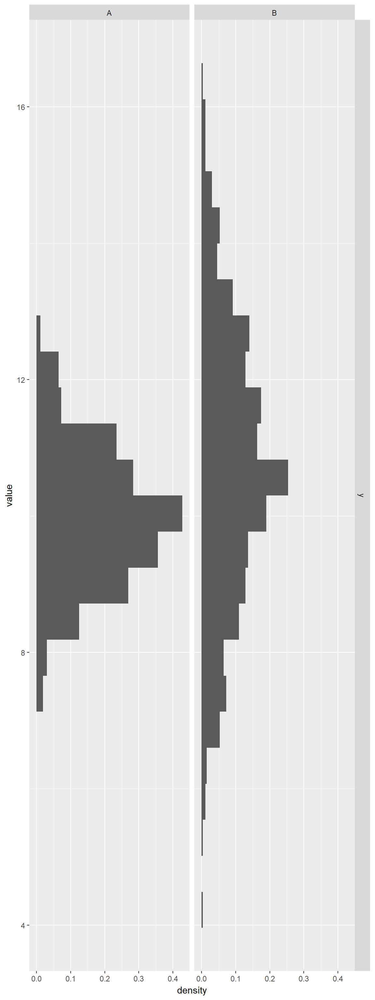
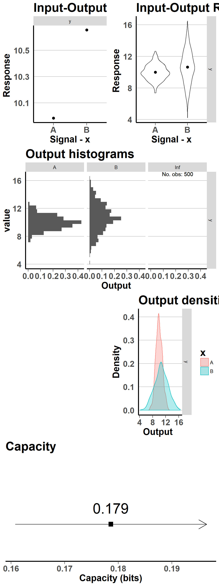

Our method for channel capacity estimation is based on classification performance of basic logistic regression model. However, sometimes it can be a poor way to descrive the patterns in the data. Still, adjustment are usually easy to implement to achieve a better classificator and a better estimate to channel capacity as a result.
The most comprehensive way to deal with complicated data structure is to use Kernel approach with a proper feature selection method. To ease the integration of such procedure within our method, we also allow to use glmnet implementation of logistic regression from glmnet package. It is possible by setting in main wrapper function capacity_logreg_main arguments:
glmnet_algorithm (default=FALSE) - a logical value indicating if glmnet package should be useddataMatrix (default = NULL) - data to be used as a response (the same as needed in glmnet function)glmnet_cores (default = 1) - number of cores to use in cross-validation of glmnetglmnet_lambdanum (default = 10) - parameter of glmnet algorithmIn general, in the case it was needed, we propose to use KernSmooth or kernlab package to generate a proper kernel extension of data and then include it into our algorithm as described above via glmnet dataMatrix object.
Below is an example of combining our package, kernel methods and glmnet algorithm. Channel is defined in the same way as in the example in formula.html.
library(CapacityLogReg)
library(ggplot2)
library(KernSmooth)
library(kernlab)
n=500
m1=10
m2=10.5
s1=1
s2=2
setwd("H:\\R\\CreatePackage\\CapacityLogReg\\vignettes")
outputLRcc<-c()
outputLR_formulacc<-c()
outputEx<-cc_exact(type="gauss",classes=2,dimension=1,list(mu1=m1,mu2=m2,sd1=s1,sd2=s2),10000,1000)
df=data.frame(x=c(rep("A",n),rep("B",n)),
y=c(rnorm(n,mean=m1,sd=s1),rnorm(n,mean=m2,sd=s2)))
yklr=as.matrix(df$y)
xklr=as.matrix(df$x)
rbf<-rbfdot(sigma=1.4)
kMatrix<-kernelMatrix(rbf,yklr)
path="example_kformula/"
dir.create(path,recursive = TRUE)
capacity=capacity_logreg_main(dataRaw=df, signal="x", response="y",side_variables=NULL,
formula_string=NULL,
glmnet_algorithm=TRUE,dataMatrix=kMatrix,
glmnet_cores=1,glmnet_lambdanum=10,
cc_maxit=100,lr_maxit=1000, MaxNWts = 5000,
output_path=path,
testing=FALSE,graphs=TRUE)
See package on GitHub. In case of any problems, please contact the authors for further instructions: t.jetka at gmail.com.
Copyright © 2018 Tomasz Jetka.